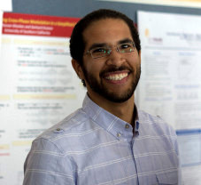

Email: ghozlan@usc.edu

I am a Ph.D. student in the Ming Hsieh Department of Electrical Engineering at the University of Southern California. My advisor is Gerhard Kramer. Before joining USC, I worked as a research assistant at the Wireless Intelligent Networks Center (WINC) at Nile University. I also received my M.Sc. in “Wireless Communications” in 2009 from Nile University, Egypt. In 2007, I obtained my B.Sc. in “Electronics and Communication Engineering” from Cairo University, Egypt.
Research
Interests: Information Theory, Optical Communication, Wireless Communication, Relaying and Cooperative Communication.
Teaching
Links